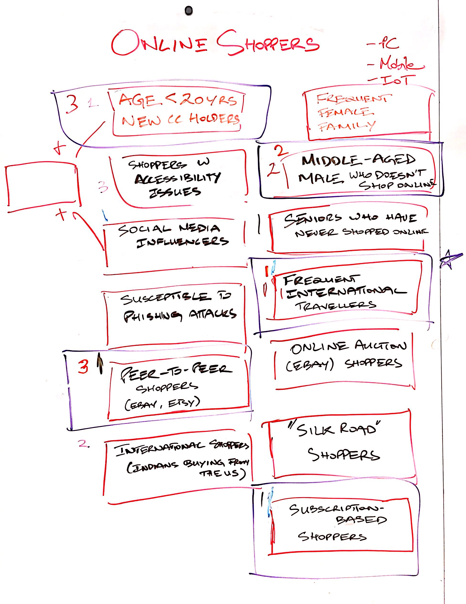

Working with an enormous scope
The scope of our prompt is enormous. With such an open prompt, we could envision ourselves exploring many avenues within a limited time. After much deliberation, we came up with a plan: mapping out our big questions individually, and coming together as a team to consolidate, we created a road map for the next four weeks.
We’ll attempt to tackle four meaty topics:
- Week 1: Consumer perceptions of sensor-based authentication
- Week 2: Identity, Privacy and Sharing
- Week 3: Convenient Payments, False Declines and the Merchant Experience
- Week 4: Fraud - on the Consumer and Merchant sides
This discovery phase will end in the second week of March. For the first week we learned all we could about how consumers felt about different authentication methods and technologies. We went out into the field for the first time and went guerilla with our research.
Guerilla Research
We headed to the Southside mall area and interviewed 15 people. We asked them to tell us how they felt about certain authentication methods (passwords, fingerprinting, FaceID etc.) and to rate the Creepiness and Convenience (based on the framework we developed last week) for each method.
Here’s a visualization from the technology mapping:

The guerilla research helped us realize that perceptions are all over the place! Some of the best insights, however, came from what people shared with us as we did this exercise with them.
- Some people are not bothered by their credit card being compromised. “I just call up my bank, and they just give me my money back.”
- Several middle aged men just confessed that they don’t shop online at all. “Ask my wife, she deals with that.”
Visioning Session
We had a visioning session focused on designing solutions for online shoppers (one of our priority target users) and brainstormed user groups within that umbrella:
We each voted on the user groups we were interested in to come up with this final list:
- New credit card holders less than 20 years old
- Mid-age men who fail at online shopping
- Peer-to-peer online shoppers
- Frequent international travellers
- Subscription based shoppers
Individually, we spent 2 minutes on each group to come up with ideas that could help the group have a better shopping experience with sensor-based authentication and other types of authentication. What came out were some interesting ideas.

Prototype
Our secondary research this week covered biometric authentication, including Apple’s Face ID technology. We found that Face ID has usability issues (link), and similar looking family members having access to another family member’s phone. This 10 year old kid can consistently unlock his mom’s phone (link)!
Two factor authentication might be the solution to some of these problems. We created an Android app that uses Microsoft’s Emotion API to look at a photo of a person and determine what they’re feeling.
It can tell if a person feels anger, contempt, disgust, fear, happiness, neutral, sadness, or surprise!
The prototype was created more to see how far we could go in one week. As of now, the prototype detects emotion off of images of people, and not a live video, but if we see a need for it, we could continue developing on it in the future.
How did we came up with the team name?
Eager for a team name for too long, we finally ran a brainstorming exercise to come up with one (and the results were nowhere near what anyone expected!)
We thought of things in several categories:
- Cookies: Snickerdoodle, Choco Chip, Sugar
- Circles: Big, Orb, Earth, Snake eating their own tail
- Red: Fire, hot, blood, danger, Chinese, communist
- Orange: Orchard, fanta, citrus, tangerine
- Rhymes with Master: Blaster, faster, hamster, disaster
- Rhymes with Card: Bard, hard, lard, shard
Looking back, it’s really interesting how we so quickly took to hamsters. Our team name (finally):
HamsterBard!